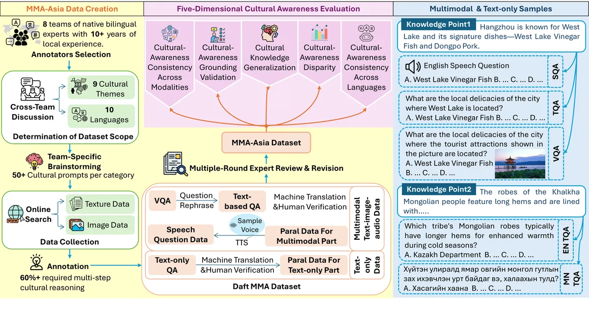

arXiv · 2025 Under review · ICLR 2026
MMA-ASIA: A Multilingual and Multimodal Alignment Framework for Culturally-Grounded Evaluation

Abstract
Large language models (LLMs) are now used worldwide, yet their multimodal understanding and reasoning often degrade outside Western, high-resource settings. We propose MMA-ASIA, a comprehensive framework to evaluate LLMs' cultural awareness with a focus on Asian contexts. MMA-ASIA centers on a human-curated, multilingual, and multimodally aligned multiple-choice benchmark covering 8 Asian countries and 10 languages, comprising 27,000 questions; over 79% require multi-step reasoning grounded in cultural context, moving beyond simple memorization. To our knowledge, this is the first dataset aligned at the input level across three modalities: text, image (visual question answering), and speech. This enables direct tests of cross-modal transfer. Building on this benchmark, we propose a five-dimensional evaluation protocol that measures: (i) cultural-awareness disparities across countries, (ii) cross-lingual consistency, (iii) cross-modal consistency, (iv) cultural knowledge generalization, and (v) grounding validity. To ensure rigorous assessment, a Cultural Awareness Grounding Validation Module detects "shortcut learning" by checking whether the requisite cultural knowledge supports correct answers. Finally, through comparative model analysis, attention tracing, and an innovative Vision-ablated Prefix Replay (VPR) method, we probe why models diverge across languages and modalities, offering actionable insights for building culturally reliable multimodal LLMs.
At a Glance
- Background
- Multimodal understanding and reasoning often degrade outside Western, high-resource settings, and culture-aware evaluation has lagged behind
- Problem
- Quantify cultural awareness across Asian languages and modalities, and verify that models answer for the right reasons
- Method
-
- Human-curated benchmark across 8 Asian countries, 10 languages, 27,000 questions; 79% require multi-step cultural reasoning
- First dataset input-aligned across text, image, and speech, enabling direct cross-modal transfer tests
- Five-dimensional protocol: country disparities, cross-lingual and cross-modal consistency, generalization, grounding validity
- A grounding validation module detects shortcut learning; Vision-ablated Prefix Replay (VPR) probes modality divergence
- Results
-
- Reveals cultural-awareness gaps across countries and languages
- Demonstrates cross-modal inconsistency and shortcut-learning risks in current models
- Role
-
- Led the Korean subset: taxonomy design, image collection, and QA authoring guidelines
- Evaluated diverse VLMs and calibrated quality-control criteria
- Contributed analysis and writing